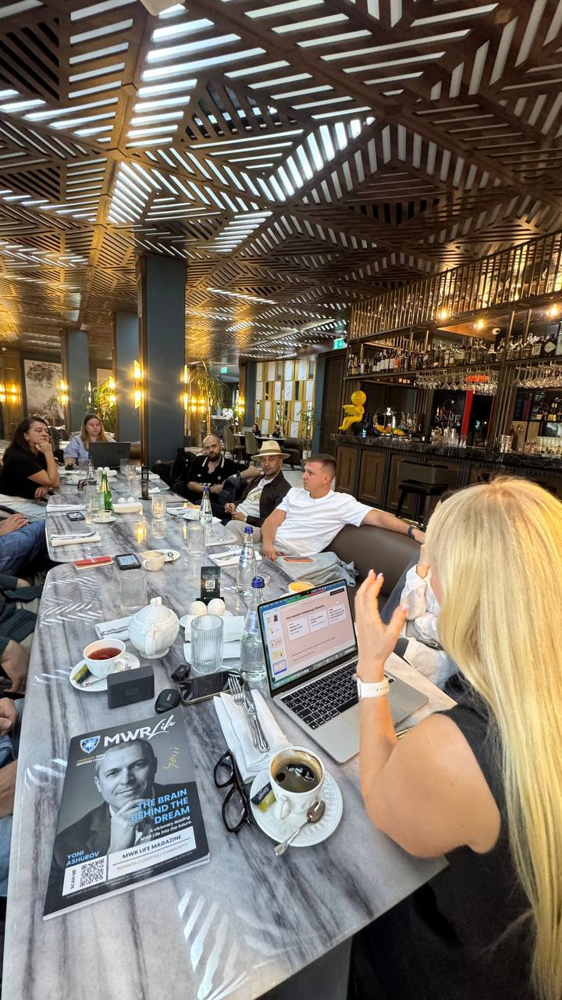
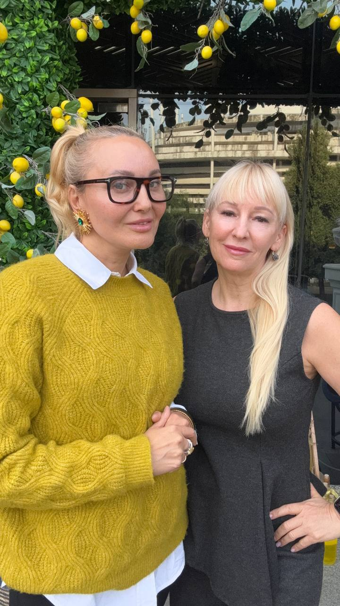
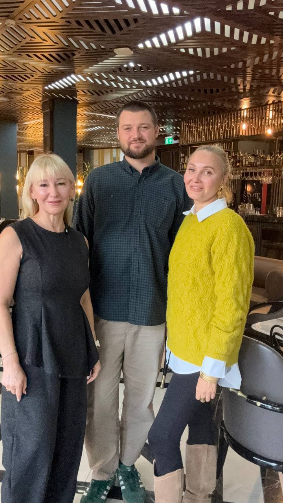
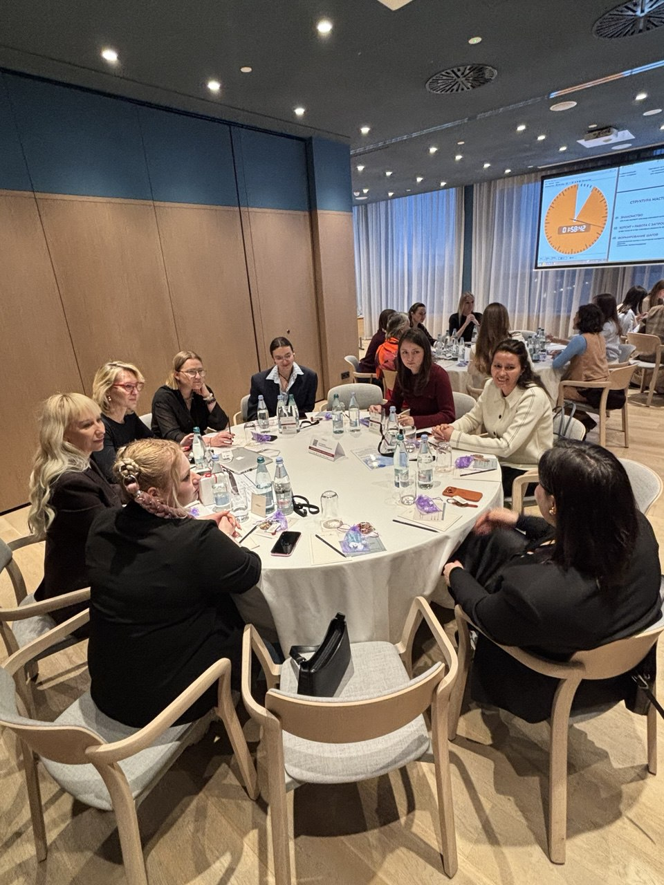
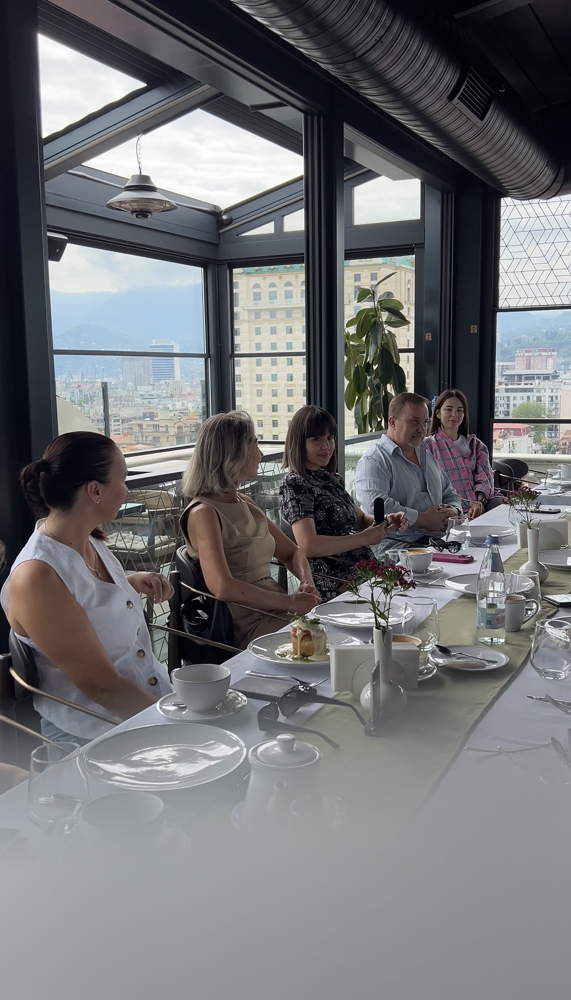
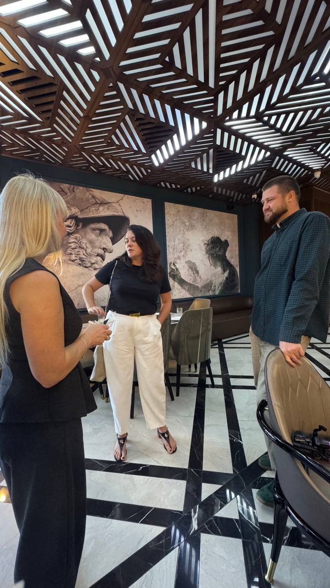
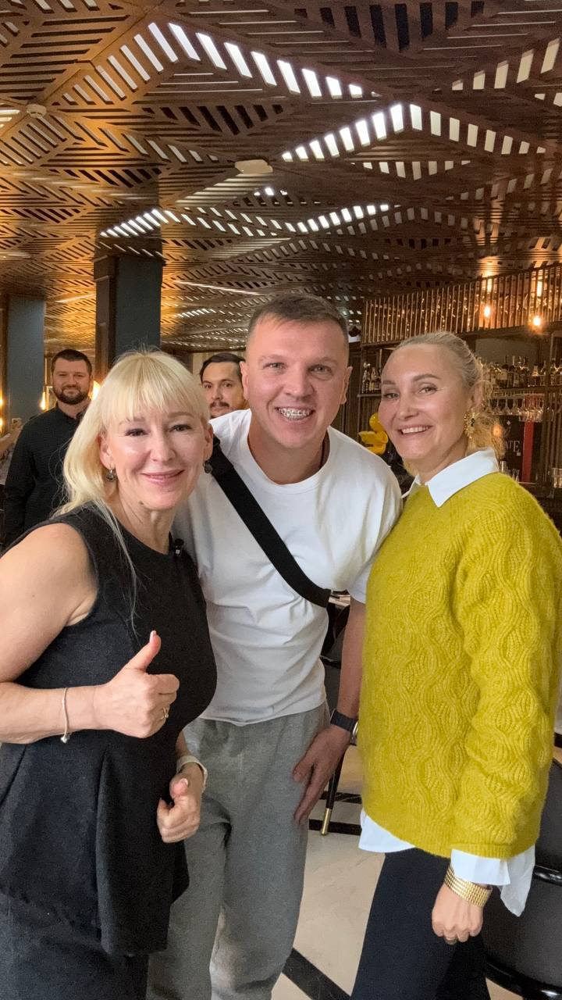
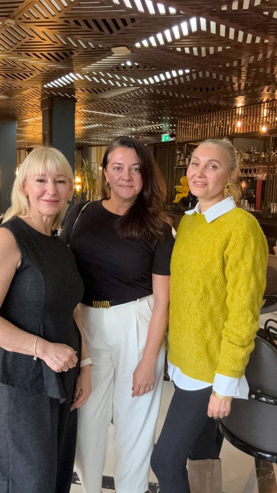

это наш клуб
клуб предпринимателей в Батуми
[ здесь знакомятся, делятся опытом
и находят своих ]
я знаю, как важно,
чтобы было с кем обсудить

новую идею, сложное решение или то, что пока не получается
[ поэтому мы создали
клуб предпринимателей ]
у нас разный бизнес

кто-то строит
дома
кто-то развивает
магазины
кто-то занимается
образованием
или инвестициями
[ а вопросы часто похожи ]
где искать клиентов, как делегировать
и когда уже перестать делать всё самому

по вторникам
мы встречаемся
участник выступает с темой, в которой у него есть опыт
или проводим мастермайнд — разбираем запросы друг друга и вместе ищем решения
[ можно задать тот самый вопрос, который давно крутится в голове ]

[ здесь можно ]
рассказать
о своём деле
услышать:
«у меня тоже так было»
посмотреть на свою задачу
чужими глазами
найти полезный
контакт
поделиться тем,
что сработало у тебя

я тоже прихожу сюда
со своими вопросами
на одной из встреч познакомилась с людьми, с которыми увидела возможности для сотрудничества и продвижения нашей онлайн-школы
[ заранее никогда не знаешь,
к кому сядешь рядом ]
для меня окружение —
это когда есть кому написать
«слушай, а как вы это решили?»

и можно честно сказать: «я пока не понимаю, что делать»
[ даже если ты руководитель
и обычно все
спрашивают тебя ]

давай знакомиться
во вторник
если ты предприниматель в Батуми —
приходи на встречу
напиши мне «КЛУБ» в директ
пришлю тему, время, место и условия участия